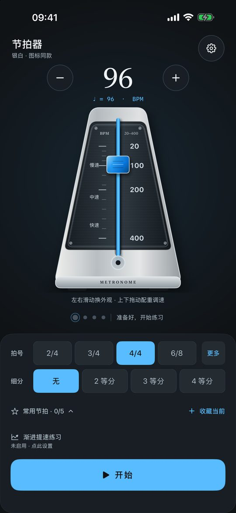
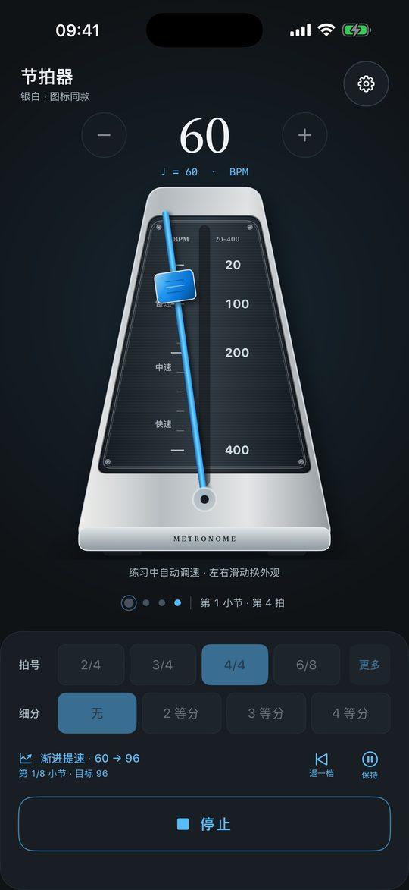
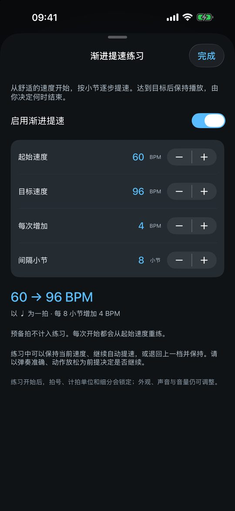
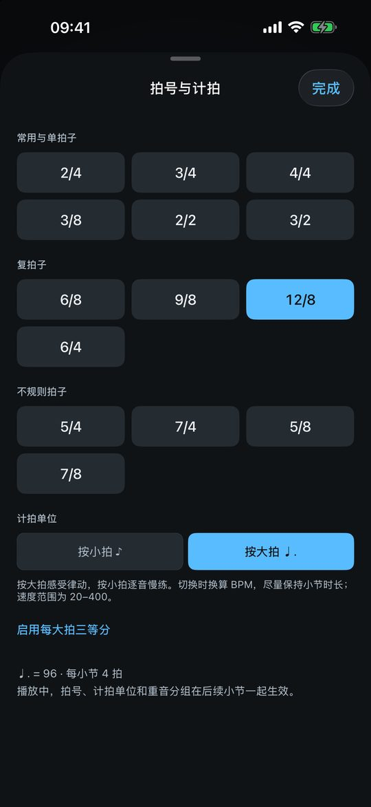
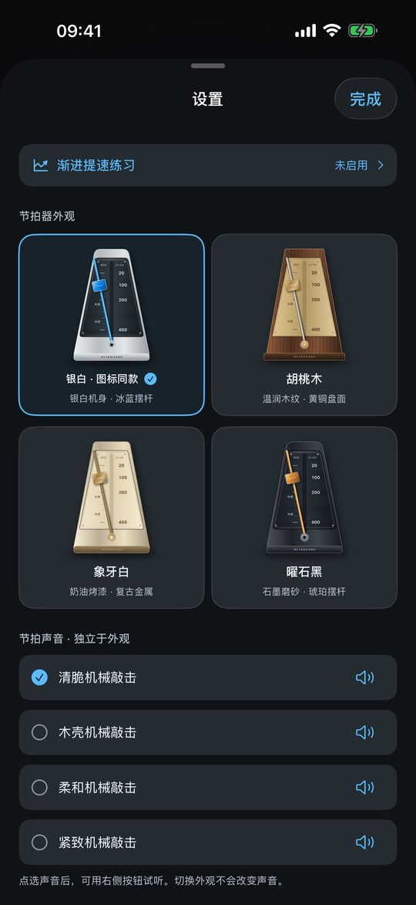
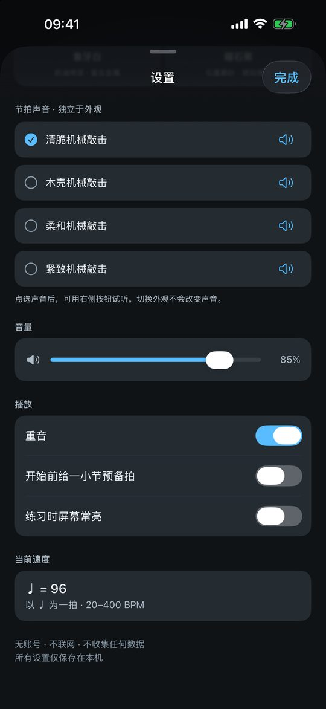
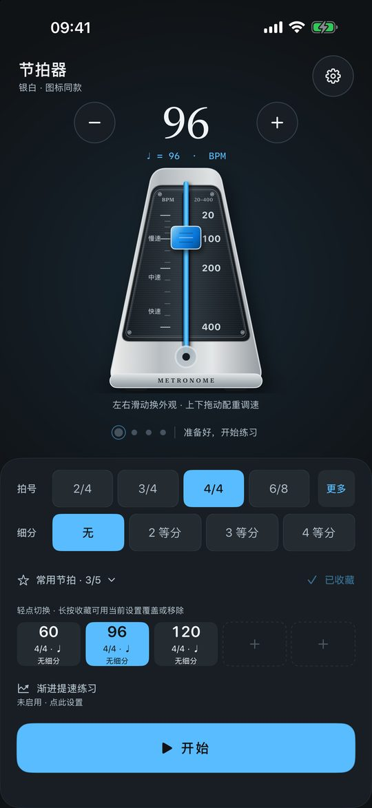

打开就练稳稳跟上每一拍
从 60 到 96，不必停下双手。按小节自动提速，吃力时保持或退回一档—— 让节拍替你记住进度，你只管专注手上的练习。
仅 iPhone · iOS 16.0 及以上 · 竖屏使用 · 无广告、无内购

慢练最难的不是慢，
是接着往前
练琴时，节拍器应该待在背景里。它不该让你分心去按按钮，也不该用一串电子滴答声盖过琴声。
每次调速，都是一次打断
手刚进入状态，却要停下来把 60 调成 64。反复几次，注意力就从乐句转到了屏幕上。
电子滴答，听着不像节拍器
生硬的方波提示音容易和琴声打架。机械摆锤那种带瞬态、快速衰减的敲击，才更容易被身体接住。
设置越多，越不想开始
常用参数收在一屏里，打开就是上次的状态。收藏一键切换，低频设置统一收进齿轮。
让速度自己往前走
设定起始速度、目标速度、每次增量和间隔小节数，节拍器在完整小节边界自动提速。 预备拍不计入，到达目标后保持播放，不打断你。
- 默认方案：60 → 96 BPM，每 8 小节增加 4 BPM；四项参数都可自定义。
- 保持 / 继续 / 退回一档：遇到难点随时停在舒适的速度，准备好再往前。
- 由音频采样时钟推进，不依赖界面刷新；手动控制在后续尚未排入的完整小节生效。
- 停止或系统中断后从起始速度重练，方案保留，不会自动出声。


左：训练进行中 右：方案配置
你需要的节奏，随手可调
从常用的 4/4 到 12/8、5/4、7/8，14 种拍号一次给齐。速度范围 20–400 BPM， 页面始终标明当前按哪个音符计拍，不含糊。
- 复拍子按大拍或小拍计速：6/8、9/8、12/8 按附点音符大拍；切换时换算 BPM，尽量保持小节时长。
- 不规则拍子重音分组：5 拍支持 2+3、3+2；7 拍支持 2+2+3、3+2+2、2+3+2。
- 二、三、四等分细分与重音提示，配合一小节预备拍，给双手留好准备时间。

四种外观，四种声音
外观和音色是两个独立设置，各自保存在本机。主页左右滑动循环切换机身， 设置页逐项试听声音——换外观不会改变声音，反之亦然。
声音由撞击瞬态、快速衰减的机身共振与带限接触噪声合成，不是电子滴答。停止播放时可单独试听，不触发预备拍、不移动播放头。


常练的节奏，一键找回
最多收藏 5 组常用设置：BPM、拍号、计拍方式、重音分组、细分与重音一起保存。 换曲目时点一下就切换，长按还能「用当前设置覆盖」，保留原位置。
- 外观、声音、音量、预备拍和常亮偏好不随收藏改变，练习状态保持连续。
- 首页固定一屏、不上下滚动，机身按剩余高度缩放，放在谱架上也能看清大字号速度。
- 支持屏幕常亮、锁屏与后台播放；来电或系统音频中断时停止，由你手动重新开始。

机械摆针
左右各 18°，按音频采样时钟摆动，每个主拍抵达交替端点。细分不会增加摆动次数，切换拍号不重置方向。
音乐时钟，不是界面动画
训练与小节推进都由已排入的音频快照驱动，界面只负责显示实际听到的位置，不提前宣称下一档已生效。
设置只留在本机
速度、收藏、外观、声音与练习方案自动保存，下次打开接着用。没有账号，没有同步，删除应用即随之清除。
稳住节拍，
把注意力留给音乐
为钢琴慢练打造，也适合其他乐器与日常节奏训练。
当前版本仅支持 iPhone（iOS 16.0 及以上），竖屏使用；完全离线，不需要联网或登录。
你可能想先知道
锁屏之后节拍声还在响，是正常的吗？
是。练琴时要看谱、屏幕通常会锁上，所以应用启用了后台音频。它会继续按原来的间隔播放，直到你停止播放或结束练习。来电等系统音频中断时则会立即停止并复位到第一拍，之后由你手动重新开始，避免挂断瞬间声音自己响起来。
播放中能改速度、拍号或细分吗？
普通模式下可以直接调速，拍号与细分的改动会等到下一小节开始才切换，避免打断正在进行的一句。渐进提速训练中会锁定节奏参数，但外观、声音和音量仍可随时调整；保持、继续、退回一档则在后续尚未排入音频队列的完整小节生效。
6/8、9/8 这类复拍子，BPM 到底按什么算？
按页面标明的音符计拍：可以选择按附点音符的「大拍」，或按谱面分母的「小拍」。切换计拍单位时会换算 BPM，尽量保持小节时长不变；整数取整或超出 20–400 范围时速度可能略有变化。2/2、3/2 按二分音符计拍。
渐进提速练习会保存上次的进度吗？
只保存方案，不保存运行进度。停止或系统中断后再次开始，都从起始速度重新练起；保持、继续或退档这类一次运行中的状态也不会写进偏好。这样每次练习的起点都确定，不会因为上次意外退出而错位。
需要联网、注册或付费吗？
都不需要。应用完全离线，无账号、无广告、无内购，也不含任何统计或广告 SDK。设置自动保存在本机，不收集个人数据，不申请麦克风权限。
把节拍练稳，
从今天的一次慢练开始
打开应用，调好速度，一键开始。剩下的，交给节拍。
应用正在 App Store 审核，上架后此按钮将更新为下载链接。